ZeroLink Sudoku
Aviv Milner & Yuval Kogman
Hello
- I'm
nothingmuch, Yuval, יובל - hate software, tired of bureaucratic cargo cults and weaponized psychology
- love-hate free software
- still pursuing a dysfunctional relationship with software since Bitcoin messed with my head
Caveats and Disclosures
- Funding provided by zkSNACKs, the company behind Wasabi Wallet
- No qualifications, just a confused code monkey, all errors my own
- Biased (strongly in favor of privacy technology)
- Zero-Link Sudoku: Real vs. Perceived Anonymity
Caveats and Disclosures
- Funding provided by zkSNACKs, the company behind Wasabi Wallet
- No qualifications, just a confused code monkey, all errors my own
- Biased (strongly in favor of privacy technology)
- [WIP] Zero-Link
Sudoku:Real vs.Perceived Anonymity*
Outline
- What is Wasabi Wallet and what is it for
- Stare a bit at Wasabi transaction graph
- Future directions
Introduction
What is Wasabi Wallet
Wasabi is an open source Bitcoin wallet for desktop focused on privacy, including Chaumian CoinJoin functionality, a non-custodial mixing technique.
The first beta release was on August 1st 2018 followed by stable release on October 31st.
Terminology
Privacy
By "privacy" I mean an individual's ability to send and receive payments without revealing information about their financial activity or their wealth ty to their counterparties or the rest of the world.
This is a narrow sense of the word, even in the context of Bitcoin. For a broader and deeper treatment:
For the last few weeks I've been working on a literature review for bitcoin privacy: https://t.co/hmDf0JT8Ky It aims to cover about all privacy issues in bitcoin, including Lightning network, and has a bunch of examples to help demonstrate how the concepts work in practice.
— belcher (@chris_belcher_) February 23, 2019
Whitepaper says
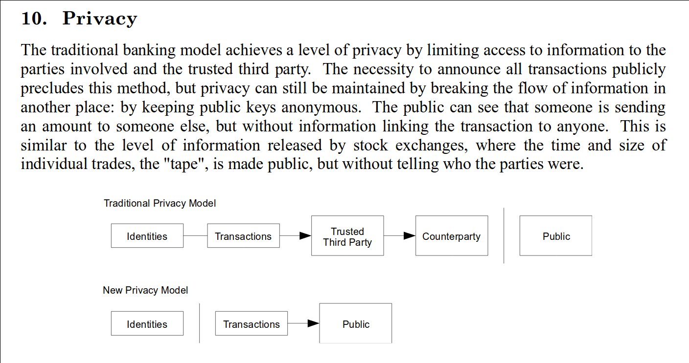
Fungibility
By "fungible" I mean that units of a currency are interchangeable with or indistinguishable from one another.
Fungibility is an important property of money since without it a specific set of funds may not be worth its face value, introducing risk and friction when receiving payments.
Censorship resistance at the protocol level only applies to miners confirming transactions, not to them being accepted as payment.
https://joinmarket.me/blog/blog/the-steganographic-principle/
Simplified Transaction Graph Model
Bitcoin transactions consume prior outputs to create new ones. Outputs can be thought of as a pair:
\((\textit{Amount}, \textit{Spending Condition})\)
Suppose Alice mines a block:
…and then donates to WikiLeaks:
…and then buys alpaca socks on the dark web:
Privacy & Fungibility Challenges
Recall that to be valid a Bitcoin transaction must:
- Only consume previously unspent coins as inputs
- Create coins as outputs with value constrained by inputs
- Prove spending authority according to the conditions specified at output creation
This means the following is public information available to any validating node:
- All unspent coins at any point in time
- All transactions and how they are connected
- Related cryptographic public keys and signatures (generally after spending)
In other words Bitcoin is:
- Trivially non fungible: every coin is uniquely identifiable within the transaction graph
- Not very private: transactions leak information, especially to counterparties.
Early Research
The consequences of this design (and other aspects of privacy) have been studied in a number of works:
- An Analysis of Anonymity in the Bitcoin System Reid, F., & Harrigan, M. (2011)
- Quantitative Analysis of the Full Bitcoin Transaction Graph Ron, D., & Shamir, A. (2012)
- Evaluating User Privacy in Bitcoin Androulaki, E., Karame, G. O., Roeschlin, M., Scherer, T., & Capkun, S. (2013)
- A Fistful of Bitcoins Meiklejohn, S., Pomarole, M., Jordan, G., Levchenko, K., McCoy, D., Voelker, G. M., Savage, S. (2013)
These papers all share mostly overlapping definitions of two commonly used heuristics for clustering the graph, both of which trace back to the whitepaper
Common Ownership Heuristic
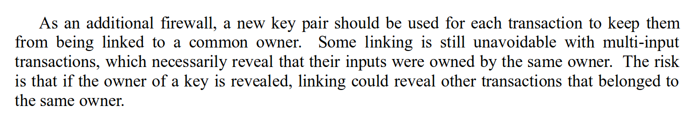
Change Identification Heuristic
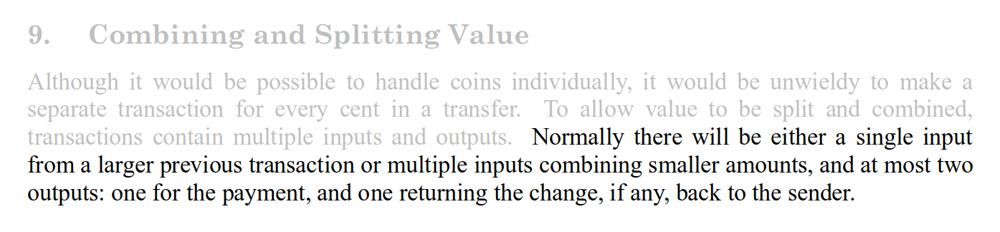
What is CoinJoin?
A mixing technique to defeat one or both heuristics.
- Users can collaborate to create joint transactions without giving up control over coins.
- Equal amount outputs of a single transaction are in a sense fungible (assuming no address reuse, and ignoring considerations of any subsequent transactions)
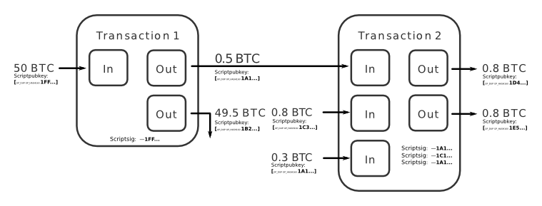
As far as I succeeded to track it back "hashcoin" was the first person I found who suggested coinjoin in July 02, 2011, Bitcointalk: https://t.co/p3E8KW8ZgOhttps://t.co/YPzIYUsLtb
— nopara73 (@nopara73) August 8, 2019
"After it has been passed around once, it gets passed around again. This time, assuming my input and output is still there, I sign the tx and pass it on. If everyone signs it, it is broadcast and we're done."
— nopara73 (@nopara73) August 8, 2019
Some CoinJoin implementations
- JoinMarket - peer to peer market based model
- Wasabi - Chaumian CoinJoin
- Samourai - Chaumian CoinJoin
Does CoinJoin provide privacy?
Yes, with caveats.
CoinJoin Research
- CoinJoin Sudoku Atlas, K. (2014)
- Anonymous Alone? Measuring Bitcoin’s Second-Generation Anonymization Techniques Moser, M., & Bohme, R. (2017)
- Anonymous CoinJoin Transactions with Arbitrary Values Maurer, F. K., Neudecker, T., & Florian, M. (2017)
Does CoinJoin provide fungibility?
That remains to be seen.
Chaumian CoinJoin in Wasabi
ZeroLink is a protocol which allows users to anonymously participate in CoinJoin transactions mediated by a centralized server.
It utilizes blind signatures in order to hide the link between users' inputs and outputs in the transaction.
Samourai and Wasabi share a common heritage but have diverged in their implementations.
Blind Signatures
Invented by David Chaum, these signatures allow a signer to sign a message without knowing its contents.
Wasabi currently uses Schnorr blind signatures over secp256k1 but originally used RSA.
Signer with public key \(P = dG\), generates a nonce \(r\) and sends \(R = rG\) to requester.
Requester generates random blinding factors \(v\) and \(w\), creates and sends a blinded commitment to the message \(c' = c - w\) where \(c = H(m || R + vG + wP)\).
Signer responds with blinded signature \(s' = r - c'd\).
Requester computes \(s = s' + v\) to obtain the complete unblinded signature for \(m\), \((c, s)\).
Verifier computes \(H(m || cP + sG) =? c\)
Simplified Protocol
Alice is a user, one of several participants.
Bob is also Alice, using a different tor identity.
Questions so far?
Wasabi Usage Analysis
Obtaining Wasabi Subgraph
- Get transactions which pay coordinator
- of these, the threshold for a CoinJoin is 5 or more equal amount outputs
- Downloaded all transactions associated with all scripts spent or created in these transactions.
- 5118 CoinJoin transactions creating 583561 and 557306 distinct scripts (as of block 592352)
- inputs total 117746 BTC, 46290 of which are from non CoinJoin transactions
- average output lifetime is 726 blocks, 942 for base denomination outputs and 531 for others
Transactions
Outputs - Overview
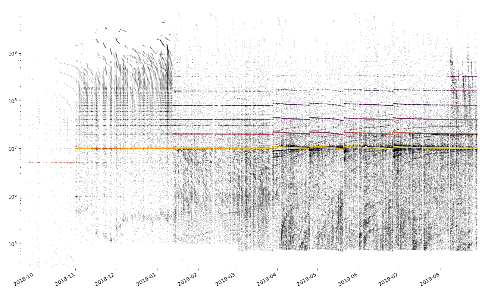
Inputs - Overview
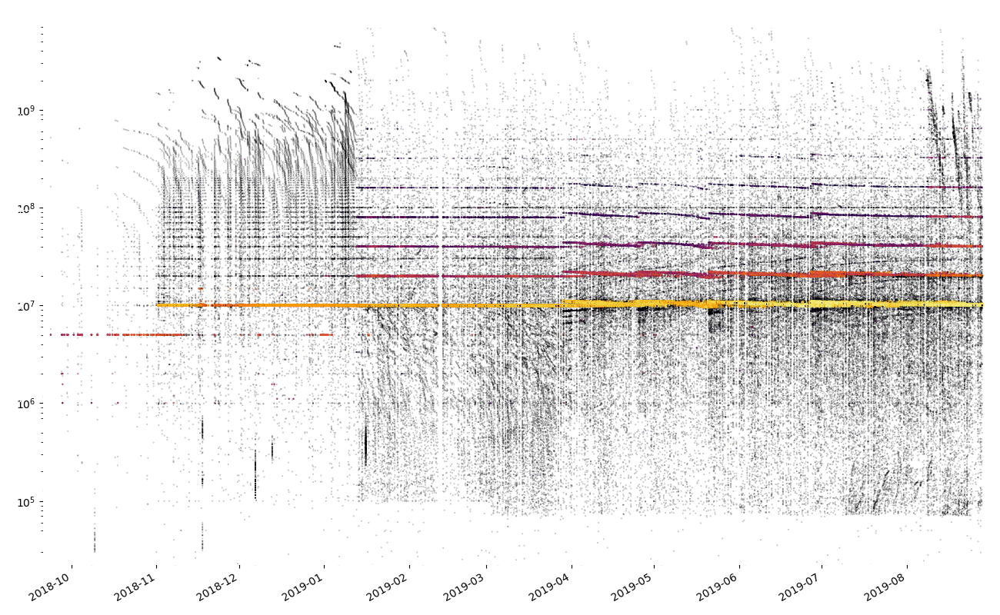
Inputs not originating from Wasabi CoinJoins
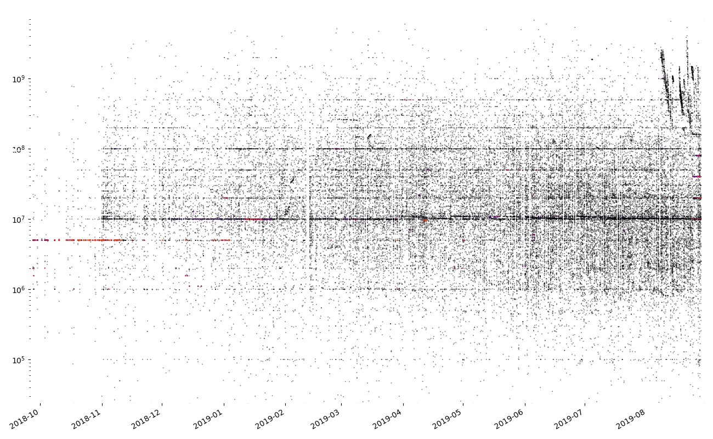
Inputs - 1.0.x
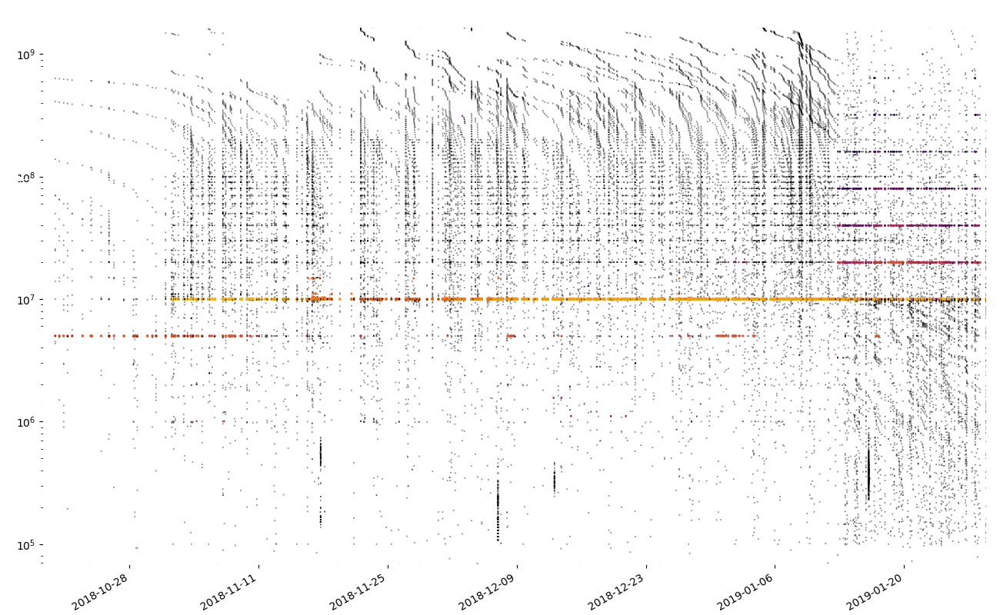
Outputs - 1.0.x

Outputs - 1.0.x
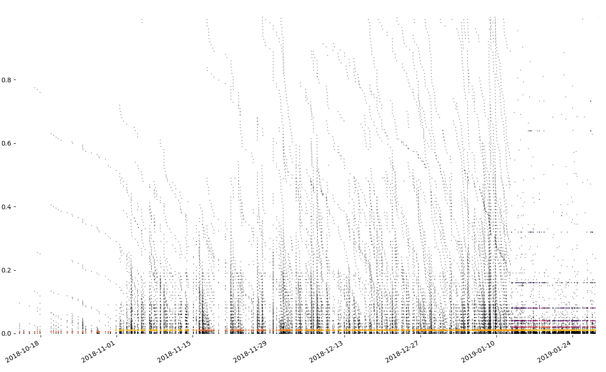
Outputs - 1.1.x
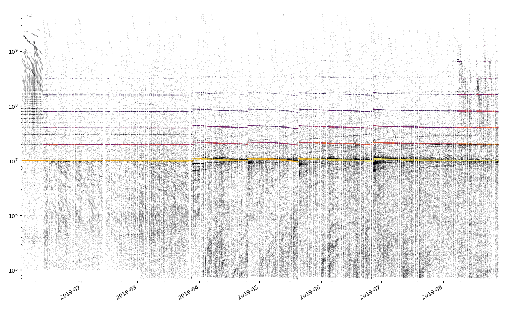
Evolution of Wasabi Coin Selection
- 1.0.0 greedy algorithm, ordered by amount
- 1.0.2 minimize # of inputs, if >1 minimize amount
- 1.1.0 forced upgrade (protocol change)
- 1.1.4 prefer lower anonymity set size inputs
- 1.1.6 if coin selection would generate change, add in small change with same or better anon set size
Outputs - 1.1.x detail
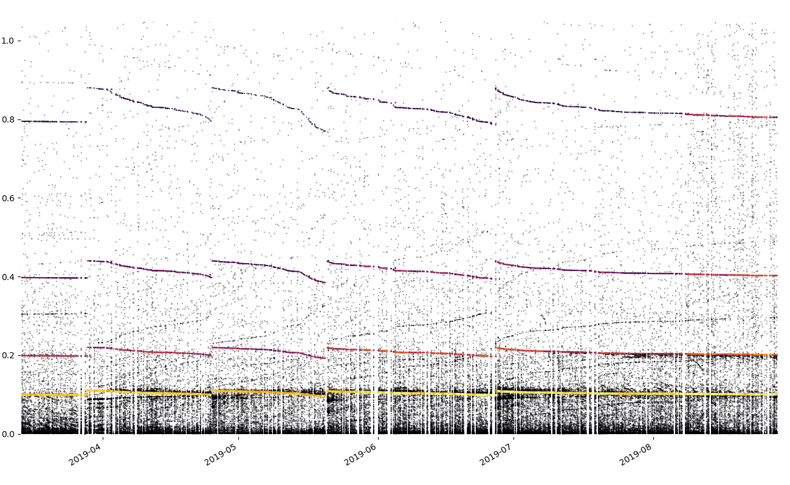
Inputs - 1.1.x detail
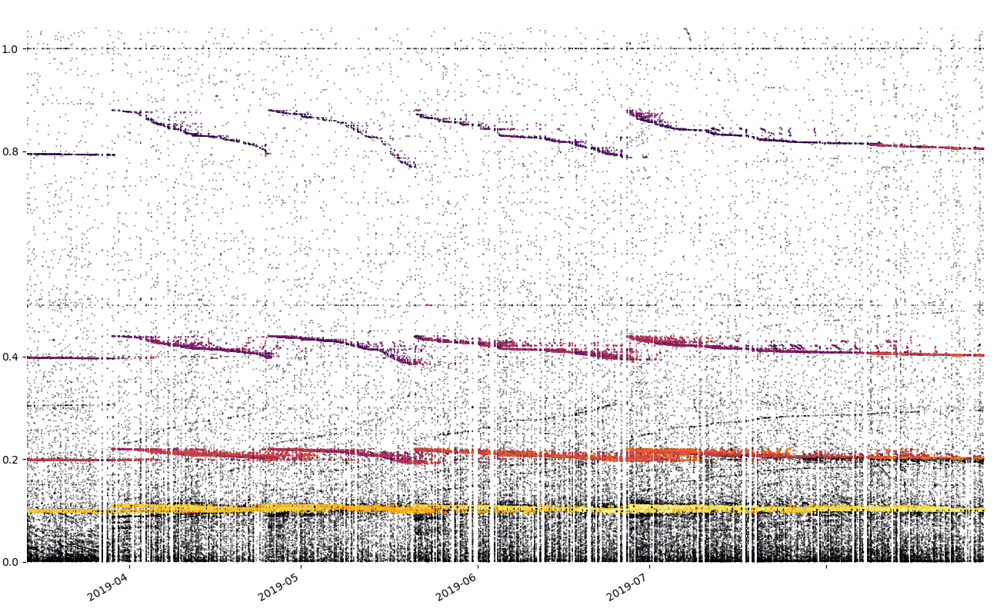
Attribution of Change Outputs
Coordinator logic is pretty complicated:
- denomination adjusts upwards to accomodate user w/ smallest input sum @ 0% mixing fees
- users only pay the fees that they can
- "keep the change" below threshold
- users with change pay exact coordinator fees
- global mining fee adjustment right before signing
Attribution of Change Outputs
- Iterated by alternating mixed integer programming with buggy and unsupported closed source software running on meat coprocessor
- Limited success so far
- Ashamed to admit I used google spreadsheet, but hey at least it's not a blockchain
Post Mix Hygiene
Aviv identified 4 potential issues:
- Merging of mixed and unmixed coins
- Consolidation of mixed coins
- Dust attacks
- Temporal patterns
Non CoinJoin transactions spending both mixed and non mixed inputs
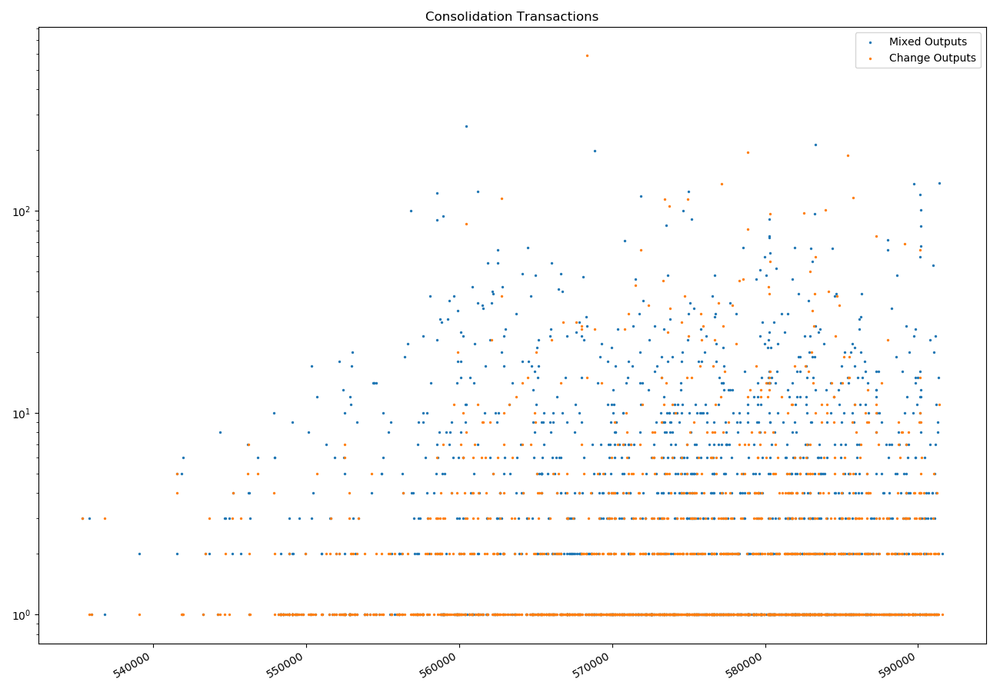
Non coinjoin transactions spending multiple mixed coins
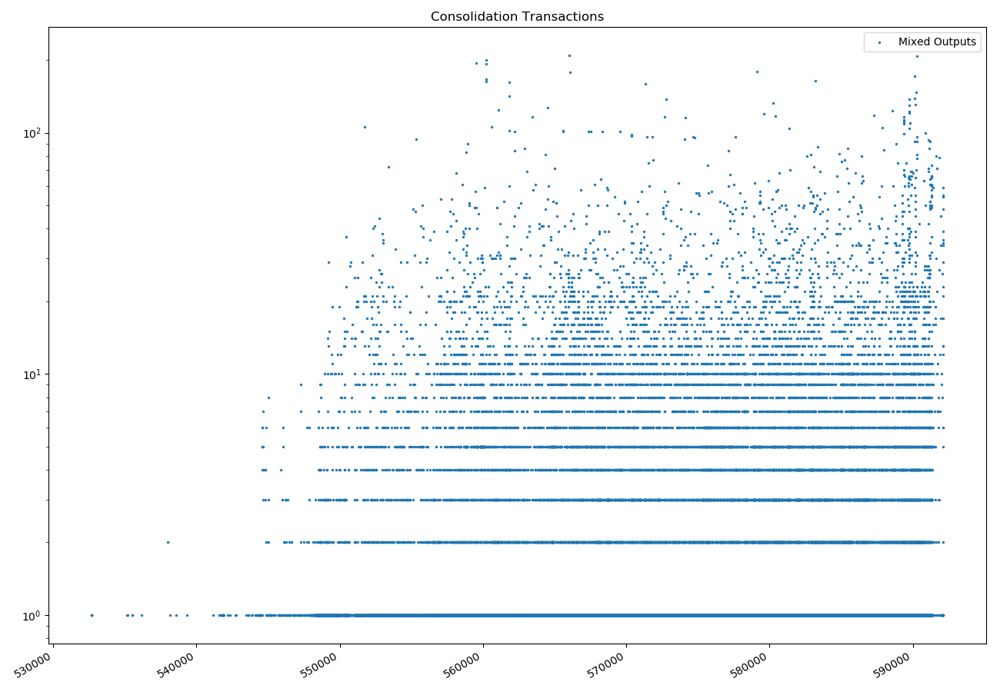
Dust
Wasabi 1.1.3 ignores < 0.0001 BTC outputs
Wasabi users are under dust attack and it seems to be somewhat successful. About half of them don't mind joining together some of their dusts, exposing the links between their mixed outputs (not the mixes though.) I'll hide the dust in the next release.https://t.co/Cbdw5QEXBz
— nopara73 (@nopara73) March 13, 2019
Only found 58 spent outputs (and 143 total) s.t.:
- <= 10000 satoshi in value
- not funded by a Wasabi CoinJoin
- shares script with some Wasabi CoinJoin output
This seems like a false negative.
Address Reuse
- Issue #2034 - Address Reuse occurs in Blinded Outputs
- Some users known to have used same seed in several wallets concurrently
Anonymity Set Size
Wasabi defines the anonymity set gained per transaction output in terms of the number of its indistinguishable siblings.
Outputs inherit smallest size from funding inputs.
This can both under and overestimate the actual privacy gained:
- A clique of users constantly remixing wastes block space and costs users money with little benefit to them or the network.
- Inputs coming from distinct CoinJoin contribute their anon set size to all plausible outputs, which is supra-linear.
LaurentMT's Boltzmann defines useful metrics, but:
- entropy measure is hard to interpret for Wasabi CoinJoins
- underlying linking probability matrix used to derive is more appropriate, but scales exponentially in tx size
This is a difficult problem, especially if looking beyond isolated transactions.
Please share your thoughts with me!
Future Directions
(and some bonus slides presented in log scale)
This Research
- Bugs, problems, minimal coding standards
- Finish analyses
- Read-at-height semantics for reproducible results
- Integrate different analyses
- Presentable Jupyter notebook, tidy up plots
Additional Research
Additional Data Sources
- Clustering
- Public Lightning Channels
- Exchanges
- JoinMarket & Whirlpool
Possible Wasabi Improvements
Pre-spend diagnostics:
- Spending unmixed coins
- Linking of different classes of inputs
- Recipient script type compared to Wasabi's
Address reuse prevention
Banning seen addresses from CoinJoin transactions does nothing for sybil attacks, but can help users avoid accidental reuse.
Coin selection during queing
Wasabi outputs inherit labels from prior linked coins until the anonymity set size target is reached, at which point it is cleared.
This data is semi structured, and could be parsed or made structured in order to avoid entangling coins with unrelated histories when queining.
Chaumian CoinJoin improvements
Differential fees
Allow output of distinct prior coinjoins to participate free to create incentive for broader transaction graph and slower (constant?) denomination reductions.
Samourai's Whirlpool does something similar (among other differences), new entrants pay to mix with older participants, tx0
Prepaid Fees
- Opt-in registration of small inputs into CoinJoins
- PrivacyPass style long lived tokens
- Redeem during input registration to cover coordinator and mining fees
Unequal amounts
Another difficult problem.
Bitcoin Ecosystem
Intermixing
Different privacy wallets are mostly complementary, but unfortunately it seems that a zero sum approach is predominant in social media with regards Bitcoin privacy wallet wallet userbases.
I hope this is only a selection effect, and instead of a binary approach, encourage playing off of tools' relative strengths.
For example, JoinMarket has functionality well suited preparing smaller amounts and change for (re-)mixing with Wasabi.
Again, assuming some adoption threshold, as these graphs intertwine the benefits to both fungibility and privacy are compounding.
Lightning
Prepaid fees over LN
- Fits well with LN privacy model
- Does not necessitate complex integration
Deeper integration?
Soft Forks
Segregated Witness was the great compositionality enabler, enabled safe off-chain transaction graphs using multisignatures and time locks.
Schnorr signatures and Taproot extend this approach with better privacy and fungibility, by reducing the on chain footprint.
There-is-no-fork Meta Consensus Protocol Upgrades:
Newly practical MP-ECDSA brings some benefits of Schnorr signatures to current consensus rules.
Particularly attractive for fungibility, given indistinguishability from
standard P2{,W}PKH outputs.
Summary
I have a lot of work left to do.
Thank You